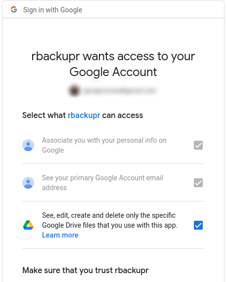

The goal of rbackupr is to facilitate online backups to Google Drive from R. Key features:
- it uses requires limited permission (only to files created by this app, not all of your Google Drive)
- it caches metadata locally for speedy updates
- it allows for easy management of multiple backups based on the idea of “projects” located under a top level folder
- the top level folder on the local disk can be moved, or read from somewhere else: all paths are relative to the base folder
- it allows for backups recursively (e.g. deeply nested folders), and makes it easy to include only some of the contents (e.g. all “.csv” files from all the subfolders that have a bunch of other files)
Warning: I have not finalised testing and documentation, but it seems to work as expected at this stage. Given that, by default, it requests access only to files created by itself, it should be mostly safe to use. Of course, make sure it is fit for (your) purpose. Consider creating your own Google App (see below).
Core motivation
By default, when you use the googledrive package you give access to all of your Google Drive. This has a number of shortcomings, in particular if you use Google Drive for different reasons and you have many files and folders stored there:
- going thrhough a lot of files,
googledriveis slow in finding what you need - in particular if you use
googledrivefrom a remote server, you may feel unconfortable in potentially leaving an open door to all of the files you have stored there - even if you use it locally, you may be concerned of the mistakes you could make by giving full access to all of your files to scripts written by you, or to packages published by a random GitHub user (such as the author of this package)
While you can give full access to Google Drive if you so wish, rbackupr is developed based on the expectation that it will have only access to the “drive.file” scope of Google Drive, i.e. that it have “access to files created or opened by the app”. In brief, of course you still need to trust the scripts you are running, but at least you can be sure that it will not mess with completely unrelated files you keep on Google Drive.
See screenshot of Google authentication prompt, where it is clear that you give rbackupr access only to “the specific Google Drive files that you use with this app.”

In order to reduce the impact of some of the issues that come with this choice, this app caches locally metadata about remote folders and files in order to speed up processing.
An additional benefit of rbackupr is that it is agnostic about the location of the base folder, as it stores only relative path: it is possible to keep a folder up to date from different locations, or move a folder and have it updated without issues.
Installation
You can install the development version of rbackupr from GitHub with:
# install.packages("remotes")
remotes::install_github("giocomai/rbackupr")How to use
In order to show how this package works, we will first create some files with random data in the temporary folder. So this is how our base folder looks like: a main folder, with some sub-folders, and some files within each of them.
library("rbackupr")
base_temp_folder <- fs::dir_create(fs::path(tempdir(),
"rbackupr_testing"))
subfolder_names <- stringr::str_c("data_",
sample(x = 10:100, size = 3, replace = FALSE))
purrr::walk(
.x = subfolder_names,
.f = function(x) {
current_folder <- fs::path(base_temp_folder, x)
fs::dir_create(path = current_folder)
current_number <- stringr::str_extract(string = x, pattern = "[[:digit:]]+") %>%
as.numeric()
purrr::walk(
.x = rep(NA, sample(x = 2:5, size = 1)),
.f = function(x){
readr::write_csv(x = tibble::tibble(numbers = rnorm(n = 10, mean = current_number)),
file = fs::file_temp(pattern = stringr::str_c("spreadsheet_", current_number, "_"),
tmp_dir = current_folder,
ext = "csv"))
})
})
fs::dir_tree(base_temp_folder)
#> /tmp/RtmpIEtxRk/rbackupr_testing
#> ├── data_34
#> │ ├── spreadsheet_34_5c3240af716c.csv
#> │ └── spreadsheet_34_5c327bd86062.csv
#> ├── data_58
#> │ ├── spreadsheet_58_5c321440281a.csv
#> │ ├── spreadsheet_58_5c322a1153ef.csv
#> │ └── spreadsheet_58_5c3255ec915a.csv
#> └── data_74
#> ├── spreadsheet_74_5c323393fef0.csv
#> ├── spreadsheet_74_5c323a007f8f.csv
#> └── spreadsheet_74_5c324c0587d5.csvBy default, rbackupr does not cache metadata files and folders it stores on Google Drive, but you are strongly encouraged to do so. You can do so with rb_enable_cache(). By default, metadata will be cached in the current active directory, but if you use rbackupr with different projects, you may not want to leave files with cached metadata scattered around your local drive, but rather keep them in place where they can be accessed. Something like this could typically be included at the beginning of rbackupr backup scripts.
library("rbackupr")
rb_enable_cache()
rb_set_cache_folder(path = fs::path(fs::path_home_r(),
"R",
"rb_data"))
rb_create_cache_folder(ask = FALSE)To reduce mixing of files you uploaded with rbackupr with other files you likely have on Google Drive, all your files and folders are stored under a base folder, that by default is called “rbackupr”. You can call your base folder something else, you can have more than one base folder, but you’re probably fine just by keeping the defaults. Under your base folder, you will have a “project” folder, and under that folder, you will actually have all your files related to that project.
No matter full path on your files on your hard drive, the folder you set up to backup will correspond to the project folder.
So the first step you need to take, is set a project for the current session, and then actually create its own folder on Google Drive, if it doesn’t yet exist.
rb_set_project(project = "rbackupr_testing") # this will set the project for the current session
rb_drive_auth()
rb_get_project(create = TRUE) # if it already exists, it just returns its dribbleAt this stage, among all your files and folder on Google Drive, you should expect to find a folder called rbackupr by default (you can customise this in rb_drive_create_project()). Within that folder, you will find another folder, rbackupr_testing (the one we set as project). All the files you backup from now on in the current session will be located under this folder.
Notice that since we are giving only the drive.file scope, i.e. only access to files and folders created with the current app, if you run googledrive::drive_ls() you should only see those two folders and nothing else.
The following steps are based on the basic idea of caching locally key information about online resources stored by Google Drive This is helpful in particular considering the fact that if you have many files, retrieving just a full file list from Google Drive to check what needs to be uploaded can be extremely time-consuming. In the local cache, for simplicity, not all data that are part of a dribble are stored.
For the base folder, under which all projects are expected to be located, only name and dribble id are stored. Indeed, they have no “parent folder”.
rb_drive_find_base_folder()
#> # A tibble: 1 × 2
#> name id
#> <chr> <drv_id>
#> 1 rbackupr 1DFtFrmrV1_szp3NrbuWkq45FzozFwzOyEven if all projects are expected to be located under a single base folder, local cache for them stores also the id of the base folder as parent_id.
rb_get_project()
#> # A tibble: 1 × 3
#> name id parent_id
#> <chr> <drv_id> <chr>
#> 1 rbackupr_testing 1inLe1aYhbKbIOUPnjPih9J-Z3q8mH-bw 1DFtFrmrV1_szp3NrbuWkq45Fz…Under the project folder, the real folders and files that are part of the backup are stored.
We can see the folders included in the base project with:
rb_get_project() %>%
rb_get_folders()
#> # A tibble: 11 × 4
#> name id parent_id relative_path
#> <chr> <drv_id> <drv_id> <fs::path>
#> 1 data_34 1-KA38B0xhXstirvcWjQ21QMg3sjer38h 1inLe1aYhbKbI… data_34
#> 2 data_58 1WwA25vkN_tyT1v3i-q5YTVEDNicRy5n5 1inLe1aYhbKbI… data_58
#> 3 data_74 1gqeIudhtbR3qgP5uwDrHslRITg3AeHps 1inLe1aYhbKbI… data_74
#> 4 data_detail_43 1K7ehxCNDr06nAL-EaRw31aOFgdFLyPwK 1-KA38B0xhXst… …ta_detail_43
#> 5 data_detail_46 1KgQk30czp4iaGTD0Lo_sAixkHsjDnwjA 1-KA38B0xhXst… …ta_detail_46
#> 6 data_detail_52 1HyAfKdBBYBZCmJfkI_WXFw3UlpOdI9tr 1WwA25vkN_tyT… …ta_detail_52
#> 7 data_detail_89 1DF-OYIGd6IBNYq7y93hBVUdaqS1PGeQF 1WwA25vkN_tyT… …ta_detail_89
#> 8 data_detail_40 1QALXJAE5n1UTvtzhPLxwQ9ndqaSu7o_n 1gqeIudhtbR3q… …ta_detail_40
#> 9 data_detail_71 1SDIjSc0nwAoBJjc3HPftBYNvnA78KnMd 1gqeIudhtbR3q… …ta_detail_71
#> 10 deeper 1DE6FD_5-oMvml4LoR6ps3PZUOK5HM3bo 1DF-OYIGd6IBN… …il_89/deeper
#> 11 much deeper 1YI1HQgufmFGafw7mHiTFHhyrrZFYNv7e 1DE6FD_5-oMvm… …/much deeperThen, for files, more details are stored in cache, including:
rb_get_project() %>%
rb_get_folders() %>%
dplyr::slice(1) %>%
rb_get_files()
#> # A tibble: 4 × 11
#> name id mimeType createdTime modifiedTime originalFilename
#> <chr> <drv> <chr> <chr> <chr> <chr>
#> 1 spreadsheet_34_b0861… 1eBN… text/csv 2022-02-27… 2022-02-27T… spreadsheet_34_…
#> 2 spreadsheet_34_b0867… 1Oh_… text/csv 2022-02-27… 2022-02-27T… spreadsheet_34_…
#> 3 spreadsheet_34_4fef6… 1C9E… text/csv 2022-03-01… 2022-03-01T… spreadsheet_34_…
#> 4 spreadsheet_34_4fef7… 1Be3… text/csv 2022-03-01… 2022-03-01T… spreadsheet_34_…
#> # … with 5 more variables: fullFileExtension <chr>, size <chr>,
#> # md5Checksum <chr>, parent_id <drv_id>, rbackupr_cache_time <dbl>Creating your own app
For more details on creating your own app see in particular:
Creating your own app has many benefits; most importantly:
- you’re in control (well, Google is ultimately always in control, but at least it’s just you and them)
- you don’t risk hitting the rate limiting because some other user is busy with the same app
Ultimately, rbackupr relies on gargle for the authentication, so you can still follow the relevant documentation to set some settings.
# See ?gargle_oauth_cache()
options(
gargle_oauth_email = "jane@example.com",
gargle_oauth_cache = "/path/to/folder/that/does/not/sync/to/cloud"
)Database cache structure
The local SQLite database created for caching has the following structure:
- a table with details about the “base_folder” (“rbackupr_base_folder”). This may well have a single row in many common use cases.
- a table with details about the project folders (“rbackupr_projects”). This will have one row per project created.
- one table for folders and one for files under each project. They will be called “rbackupr_folders_ProjectName” and “rbackupr_files_ProjectName”, where “ProjectName” is the name of the project, typically set with
rb_set_project().
Things to keep in mind
Once authenticated, you can still use googledrive. Keep in mind that some things may not work as expected, due to the restricted access to Google Drive given by this app.
For example, listing all files with googledrive::drive_ls() will only list files created with this app.